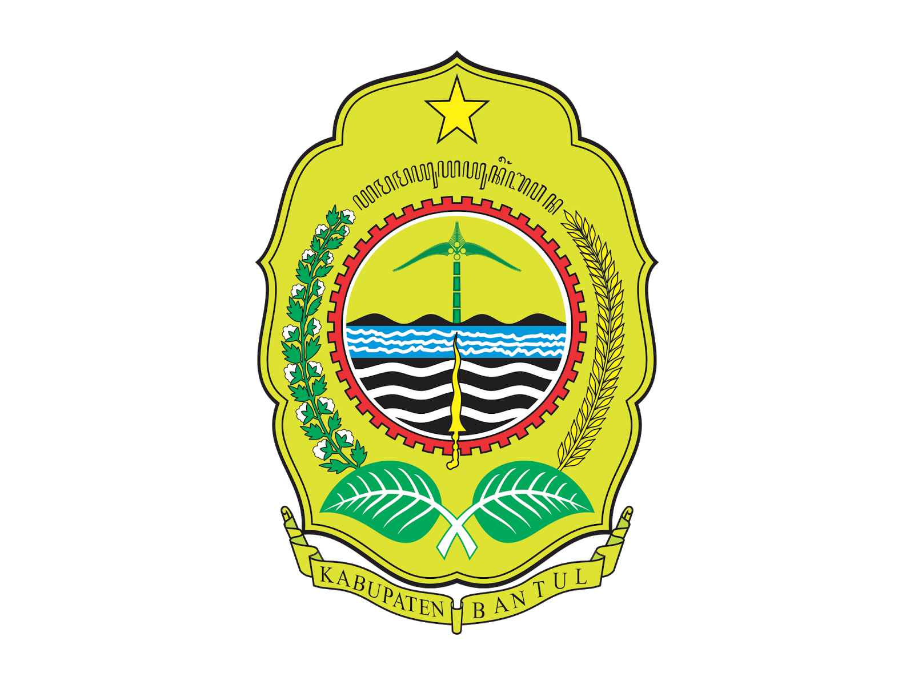

Tabel Luas Wilayah dan Jumlah Desa
| Kecamatan | Luas (km²) | % Luas | Jumlah Desa |
|---|---|---|---|
| Srandakan | 18,32 | 3,61 | 2 |
| Sanden | 23,16 | 4,57 | 4 |
| Kretek | 26,77 | 5,28 | 5 |
| Pundong | 23,68 | 4,67 | 3 |
| Bambanglipuro | 22,70 | 4,48 | 3 |
| Pandak | 24,30 | 4,79 | 4 |
| Bantul | 21,95 | 4,33 | 5 |
| Jetis | 24,47 | 4,83 | 4 |
| Imogiri | 54,49 | 10,75 | 8 |
| Dlingo | 55,87 | 11,02 | 6 |
| Pleret | 22,97 | 4,53 | 5 |
| Piyungan | 32,54 | 6,42 | 3 |
| Banguntapan | 28,48 | 5,62 | 8 |
| Sewon | 27,16 | 5,36 | 4 |
| Kasihan | 32,38 | 6,39 | 4 |
| Pajangan | 33,25 | 6,56 | 3 |
| Sedayu | 34,36 | 6,78 | 4 |
| Jumlah | 506,85 | 100 | 75 |
Statistik Kabupaten Bantul - Tahun 2014